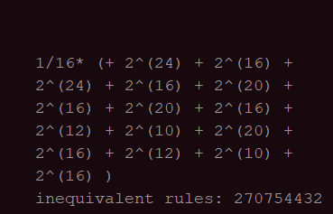

On the Number of Inequivalent 2D CAs with the von Neumann Neighborhood
A calculation of the number of inequivalent CA rules using Polyas enumeration theorem
The result
Related Projects
(cellular_automata) Cellular Automata on Irregular Tessellations
(cellular_automata) OECA
(algorithm) Finding Remote Locations on Grid-Based maps